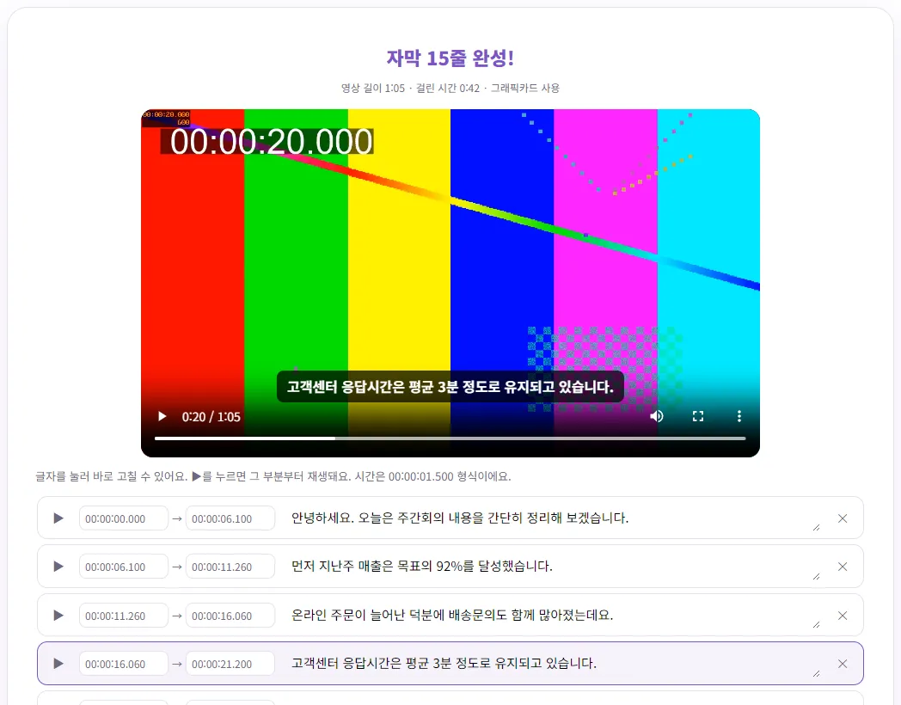
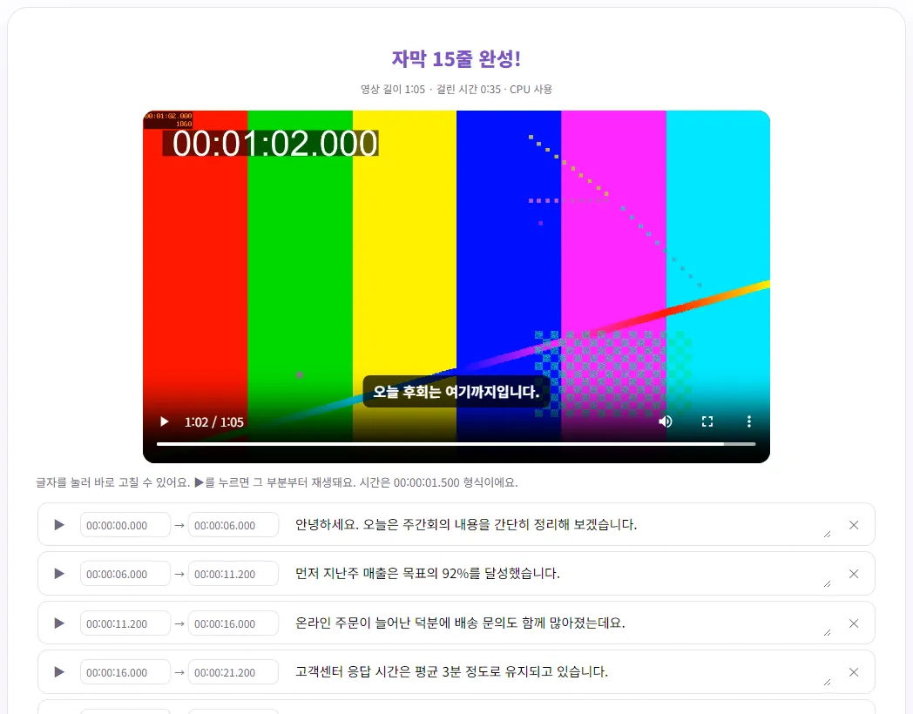

영상 자막(SRT), 무료로 자동으로 만들 수 있을까요?
강의나 브이로그에 자막을 넣고 싶은데 한 줄 한 줄 받아 적자니 영상 길이의 몇 배가 걸려 엄두가 안 나셨죠? 이 글에서는 AI가 말소리를 받아써서 SRT 자막 파일까지 만들어 주는 방법과, 모델별로 실제 걸린 시간, 틀린 글자를 빠르게 고치는 요령까지 직접 해 본 결과로 알려 드릴게요.
자동 자막, 어디까지 믿어도 될까요?
요즘 AI 받아쓰기는 또박또박 말한 한국어라면 꽤 정확해요. 그래도 '자동으로 만든 뒤 사람이 한 번 훑어보는 것'까지가 한 세트라고 생각하는 게 좋아요. 벤토툴 영상 자막 만들기는 공개 음성 인식 모델(Whisper)을 내 브라우저 안에서 돌려서, 영상이나 녹음 파일이 서버로 올라가지 않아요. 회의 녹화처럼 밖으로 나가면 곤란한 영상에도 쓸 수 있는 이유예요.
이번 글을 위해 직접 쓴 1분 5초짜리 주간 회의 안내 원고를 윈도우 음성 합성으로 읽혀 영상으로 만들고, 모델별로 자막을 만들어 봤어요. 기계 음성이라 발음이 아주 또렷하다는 점은 감안해 주세요. 실제 사람 목소리, 잡음, 빠른 말이 섞이면 더 틀려요.
모델 고르기: 빠름, 정확, 가장 정확
처음 한 번은 AI 모델 파일을 내려받아야 해서, 모델이 클수록 첫 실행이 오래 걸려요. 도구는 그래픽카드(WebGPU)를 쓸 수 있는 브라우저인지 스스로 확인해서 알맞은 파일을 고르기 때문에, 같은 모델이라도 컴퓨터마다 크기 표시가 달라요.
| 모델 | 첫 다운로드 (일반 CPU) | 첫 다운로드 (그래픽카드) | 1분 5초 영상 총 걸린 시간 (실측) |
|---|---|---|---|
| 빠름 | 약 80MB | 약 160~200MB | CPU 36초, 그래픽카드 27초 |
| 정확 (한국어 기본값) | 약 240MB | 약 290MB | CPU 1분 45초, 그래픽카드 43~53초 |
| 가장 정확 | 쓸 수 없음 | 약 540MB | 그래픽카드 1분 7초 |
위 시간은 이 글을 쓴 데스크톱 PC에서 처음 실행해서 모델 다운로드까지 포함한 값이에요. 진행 화면을 보면 다운로드가 끝난 뒤 받아쓰기 자체는 그래픽카드에서 10~15초 안팎, CPU로 '정확' 모델은 약 1분 20초가 걸렸어요. 도구 안내에 따르면 한 번 받은 모델은 같은 브라우저에서 다시 받지 않아요. 인터넷 속도와 컴퓨터 성능에 따라 시간은 크게 달라지니 참고용으로만 봐 주세요.
영상이 길면 받아쓰기 시간도 길이에 비례해서 늘어나요. 이 도구는 소리를 30초 단위로 차례로 받아쓰기 때문에, 1분 영상에 받아쓰기만 1분 20초가 걸린 컴퓨터라면 30분 영상은 대략 40분 가까이 걸린다고 어림할 수 있어요. 긴 영상은 처음 몇 분만 잘라서 먼저 돌려 보고, 걸린 시간과 정확도를 확인한 다음 전체를 넣는 게 좋아요. 받아쓰는 동안 화면에 글자가 실시간으로 나와서 진행 상황을 볼 수 있고, 중간에 '그만하기'로 멈출 수도 있어요.
고르는 기준은 간단해요. 한국어라면 기본값인 '정확'으로 시작하고, 사람 이름이나 숫자가 많아 오류가 거슬리면 그래픽카드가 있는 컴퓨터에서 '가장 정확'을 써 보세요. '빠름'은 영어 영상이나, 일단 대강의 내용만 글로 뽑아 보고 싶을 때 좋아요.

한국어 정확도의 한계, 실제로 이렇게 틀렸어요
'정확' 모델은 15줄 모두 원고와 뜻이 같았고, '주간 회의'를 '주간회의'로 붙여 쓰는 정도의 띄어쓰기 차이만 있었어요. '구십이 퍼센트', '오후 두 시'처럼 읽은 숫자는 '92%', '2시'로 바꿔 적었어요. 틀린 건 아니지만 원고와 표기가 달라지니 표기 규칙이 있다면 확인이 필요해요.
반면 CPU에서 '빠름' 모델은 이렇게 틀렸어요.
- '회의가 끝난 뒤에' → '후회의가 끝난 뒤에'
- '오늘 회의는 여기까지입니다' → '오늘 후회는 여기까지입니다'
- '준비물은' → '준비 물은', '조명 두 개' → '조명두개'

이런 오류는 대부분 비슷하게 들리는 다른 단어로 바뀌는 형태라, 자막만 읽어서는 놓치기 쉬워요. 도구 페이지에는 공개 한국어 음성으로 잰 글자 오류율도 나와 있는데, '빠름' 약 15%, '정확' 약 7%, '가장 정확' 약 3%였어요.
빠르게 고치는 요령
- 결과 목록에서 틀린 줄의 글자를 눌러 바로 고치세요. 영상 위 자막도 함께 바뀌어요.
- 헷갈리는 줄은 왼쪽 ▶를 눌러 그 부분부터 들어 보세요. 처음부터 다시 볼 필요가 없어요.
- 사람 이름, 회사·상품 이름, 숫자, 전문 용어를 집중해서 보세요. AI가 가장 자주 틀리는 곳이에요.
- 같은 단어가 여러 번 틀렸다면 SRT로 저장한 뒤 메모장 같은 편집기의 '바꾸기'로 한 번에 고치는 게 빨라요. SRT는 그냥 글자 파일이라 메모장으로 열려요.
- 필요 없는 줄은 오른쪽 ✕로 지우고, 시간이 어긋난 줄은 시간 칸을 00:00:01.500 형식으로 고치면 돼요.
녹음 단계에서 정확도를 높이려면 마이크를 입 가까이 두고, 배경음악은 작게, 여러 사람이 동시에 말하지 않게 하는 게 가장 효과가 커요. 이 도구는 누가 말했는지(화자)는 구분하지 않으니, 대담 영상이라면 필요할 때 줄 앞에 이름을 직접 붙여 주세요.
SRT와 VTT, 뭐가 다를까요?
두 형식 모두 '몇 초부터 몇 초까지 이 글자'를 적은 글자 파일이에요. 저장 버튼에서 둘 다 받을 수 있고, 실제로 받은 파일을 열어 보면 이렇게 달라요.
| 구분 | SRT | VTT (WebVTT) |
|---|---|---|
| 첫 줄 | 바로 자막 번호 1부터 시작 | 'WEBVTT'로 시작 |
| 시간 표기 | 00:00:06,100 (쉼표) | 00:00:06.100 (마침표) |
| 줄 번호 | 있음 | 없어도 됨 |
| 주로 쓰는 곳 | 유튜브, 영상 편집 프로그램, 대부분의 플레이어 | 웹 페이지 영상 플레이어, 위치·스타일 지정이 필요할 때 |
어디에 넣을지 모르겠다면 SRT를 고르면 돼요. 받아 줄 수 있는 곳이 가장 많아요. 자막 없이 글만 필요하면 '텍스트(TXT) 저장'이나 '글 전체 복사'를 쓰세요.
유튜브와 편집 프로그램에 넣기
유튜브 스튜디오
유튜브 고객센터에 안내된 순서는 이래요.
- YouTube 스튜디오에 로그인하고 왼쪽 메뉴에서 '자막'을 고르세요.
- 자막을 넣을 동영상을 고르고, 필요하면 '언어 추가'로 언어를 고르세요.
- '자막'에서 '추가'를 누른 뒤 '파일 업로드'를 고르세요.
- SRT 파일을 고르고 안내에 따라 진행한 뒤 '저장'을 누르세요. SRT에는 시간이 들어 있으니, 타이밍 포함 여부를 묻는다면 포함된 파일 쪽을 고르면 돼요.
유튜브 도움말에 따르면 SRT는 기본 형식만 지원하고, 글꼴 같은 스타일 정보는 인식하지 않아요. VTT도 지원 형식 목록에 있어요. 화면 메뉴 이름은 바뀔 수 있으니 막히면 아래 참고 자료의 공식 도움말을 확인하세요.
프리미어 프로 등 편집 프로그램
어도비 도움말에 따르면 Premiere에서는 SRT 파일을 다른 미디어처럼 프로젝트로 가져온 뒤, 프로젝트 패널에서 시퀀스로 끌어다 놓으면 새 캡션 트랙이 만들어져요. 다른 편집 프로그램도 대부분 SRT 불러오기를 지원하지만 메뉴 위치는 프로그램과 버전마다 달라요. 영상에 자막을 '구워서'(화면에 박아서) 내보낼지, 켜고 끌 수 있는 자막으로 둘지는 편집 프로그램에서 정하면 돼요.
영상에서 소리만 따로 필요하다면 동영상에서 소리만 MP3로 뽑기를, 자막을 넣기 전에 앞뒤를 정리하고 싶다면 앱 설치 없이 동영상 앞뒤 자르기를 참고하세요.
참고한 자료
- YouTube 고객센터 - 자막 추가
- YouTube 고객센터 - 지원되는 자막 파일
- Adobe 도움말 - 제3자 서비스에서 캡션 파일 가져오기
- W3C - WebVTT: The Web Video Text Tracks Format (영문)
글에서 소개한 도구, 회원가입 없이 바로 써 보세요.
💬 영상 자막 만들기 바로 쓰기